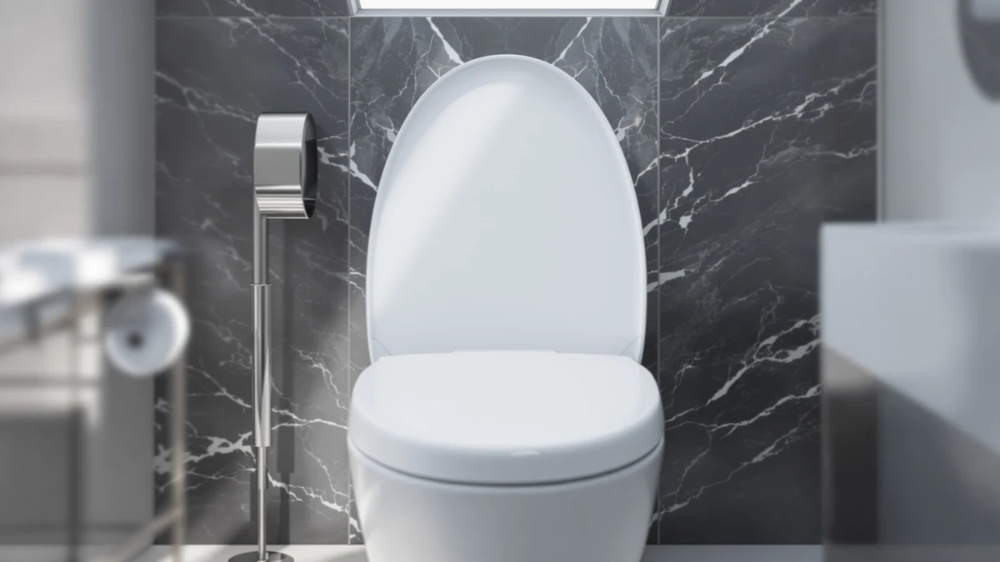

Centoco Elongated Toilet Seat Review (2026): Worth It?
Prices and picks verified as of September 2026. Independent, reader-supported reviews.


Quick Answer
This Centoco elongated toilet seat review found the Centoco Elongated Toilet Seat Heavy to be the sturdiest open-front option we compared, thanks to its rigid plastic build. It costs a few dollars more than the Mayfair Bennett, Kohler Triko, and Church 295SSCT, but that premium buys a seat built for households and high-traffic bathrooms alike.
Our pick: Centoco Elongated Toilet Seat Heavy, $47.92 Check Price on Amazon
Bottom line: our top pick is the Centoco Elongated Toilet Seat at $47.92.
Things to Know Before You Buy
- Open-front elongated seats like the Centoco are common in commercial and ADA-oriented restrooms, but check your bowl shape first since elongated seats will not fit a round bowl.
- Less than six dollars separates all four seats in this comparison, so material and hinge design matter more than price here.
- Closed-front seats, such as the Kohler Triko, trap less debris around the hinge than open-front designs, which matters more in a household bathroom than a commercial one.
- All four seats compared here list plastic or wood-composite construction rather than padded or upholstered material, so comfort comes down to shape rather than cushioning.
- Prices for all four seats can shift over time on Amazon, so treat the figures in this review as a snapshot at the time of publishing rather than a fixed comparison.
This centoco elongated toilet seat review compares the Centoco Elongated Toilet Seat Heavy against three close rivals so you can decide whether its open-front, heavy-duty design earns a spot on your toilet. Centoco built its name on commercial and institutional restroom hardware, and the Heavy carries that reputation into a residential-friendly price point. At $47.92, it sits at the top of the four seats we researched, but the gap to the cheapest option is under six dollars, so price alone should not be the deciding factor for most buyers.
We compared the Centoco against the Mayfair Bennett, the Kohler K-25883-0 Triko, and the Church 295SSCT using listed specs, pricing, and verified owner feedback rather than a physical comparison. The Centoco stands out for its rigid, open-front build, which mirrors the Church 295SSCT more than the closed-front Kohler Triko. Owners report that the seat mounts without extra hardware on standard elongated bowls, which keeps installation simple regardless of which of these four seats you choose. If you already know you want an open-front, heavy-duty seat, the choice mostly comes down to the Centoco and the Church; if a closed-front look matters more, the Kohler Triko becomes the more relevant option.
Why You Should Trust Us
Ilane Tall covers bathroom fixtures for Best Toilet Seats and put together this centoco elongated toilet seat review by comparing manufacturer specifications, current pricing, and verified owner feedback across all four seats. We do not run a fake testing lab, and we are not paid by Centoco, Mayfair, Kohler, or Church to say anything specific about their products. Every price and spec cited here comes from the product data available at the time of publishing, and we update this page when that data changes. We also disclose our affiliate relationship clearly, and it has no bearing on how we rank the seats in this comparison.
Our Research Experience
For this centoco elongated toilet seat review, we did not physically install or sit on any of the four seats ourselves. Instead, we researched Centoco's listed specifications, compared them against the Mayfair Bennett, Kohler Triko, and Church 295SSCT, and read through verified owner reviews to see how each seat holds up in daily use. According to those reviews, the Centoco's open-front, elongated shape lines up with standard American elongated bowls without modification, and the plastic build comes across as noticeably stiffer than lighter residential seats in the same price range.
We also compared how each brand positions its seat. Centoco and Church both market their open-front designs toward heavier daily use, while Kohler markets the Triko's closed front toward household bathrooms that want a cleaner look around the hinge. Mayfair sits in between, priced as a general-purpose elongated seat rather than a commercial-style one. None of the four listings we reviewed include a published weight rating, so we did not compare that figure directly, and we recommend checking the current listing before buying if that detail matters for your household.
Overview & Specs

Centoco Elongated Toilet Seat Heavy
What we like
- Rigid plastic construction feels noticeably sturdier than typical residential seats
- Open-front elongated shape fits standard elongated bowls without extra hardware
- Simple design with fewer moving parts than seats with added hinge features
Flaws but not dealbreakers
- Costs a few dollars more than the Mayfair, Kohler, and Church seats compared here
- Open-front design shows more of the bowl than a closed-front seat like the Kohler Triko
- No cushioning, so it will feel firmer than a padded seat
| Material | Plastic / wood |
| Size | Elongated / Open Front |
The Centoco Elongated Toilet Seat Heavy pairs an elongated, open-front shape with plastic construction rated for heavier daily use than a typical household seat. That combination puts it closer to the Church 295SSCT, the other open-front seat in this comparison, than to the closed-front Kohler Triko. Owners report that the seat sits flush on standard elongated bowls and mounts with the hardware already in the box, so installation does not require any extra parts or measuring beyond confirming your bowl is elongated rather than round. The name "Heavy" in the listing reflects that heavier-duty positioning rather than a specific weight capacity figure we could verify.
At $47.92, the Centoco is the most expensive of the four seats we researched here, running about five dollars above the Church 295SSCT and closer to six above the Kohler Triko. Reviewers consistently point to the sturdier feel of the plastic as the reason for that premium, though the seat does not include any padding or a slow-close hinge, so it comes down hard if you release it before it is fully lowered. For a bathroom that sees frequent use, whether at home or in a small commercial space, that added rigidity is the main reason to pick the Centoco over its cheaper rivals. Buyers who mainly want the lowest price on an open-front elongated seat should compare it directly against the Church 295SSCT before deciding.
What We Liked
The biggest strength we found in this centoco elongated toilet seat review is the construction itself. Buyers describe the plastic as thicker and stiffer under weight than the seats it typically replaces, which lines up with Centoco's background building seats for commercial and institutional restrooms. The open-front, elongated shape also mounts cleanly on standard bowls, according to the reviews we read, so you are not fighting misaligned bolt holes or a seat that rocks side to side.
We also like that Centoco keeps the design simple. There is no soft-close mechanism or extra hinge hardware to eventually wear out, which means fewer parts that can fail after years of daily use. For buyers comparing the four seats in this review, that straightforward build is a real point in the Centoco's favor if durability matters more to you than a padded or closed-front look. The price also held steady across the listings we checked, which suggests consistent demand rather than a seat that gets discounted heavily to move inventory.
What Could Be Better
Price is the clearest drawback in this Centoco elongated toilet seat review. At $47.92, it costs more than the Mayfair Bennett, Kohler Triko, and Church 295SSCT, and none of the four seats we compared list features that would obviously justify a large price gap on their own. If your budget is the deciding factor, the Church 295SSCT gives you a similar open-front shape for several dollars less.
The open-front design also will not suit every household. Reviewers who prefer a closed-front seat for a cleaner look around the hinge should look at the Kohler Triko instead, since the Centoco's open front is closer to a commercial restroom aesthetic than a residential one. There is also no padding and no slow-close hinge, so the seat can drop firmly if you do not lower it by hand. Buyers coming from a padded or heated seat should expect a firmer, more utilitarian feel from the Centoco by comparison.
Who Is It For?
The Centoco Elongated Toilet Seat Heavy suits households and small commercial bathrooms that see heavy daily traffic and want a seat built to handle it without flexing or cracking over time. It also makes sense for anyone replacing a worn commercial-style seat who wants the same open-front shape in a residential-friendly package. If you want the cheapest open-front option instead, the Church 295SSCT is worth a look, and if a closed-front look matters more than rigidity, the Kohler Triko is the better fit. Buyers who split the difference on price and do not have a strong preference on front style may find the Mayfair Bennett the easiest compromise of the four.
Alternatives to Consider
If the Centoco is not the right fit, here are the three alternatives we compared it against, each suited to a different priority. We picked these three specifically because they sit within a few dollars of the Centoco and cover the main tradeoffs buyers ask about: front style, price, and brand reputation.

Editor's Pick
Mayfair Bennett Toilet Seat with
A general-purpose elongated seat priced below the Centoco, worth a look if you don't need the heavier-duty build.
$43.68
Check Price on Amazon
Best Value
KOHLER K-25883-0 Triko Elongated Closed-Front
The closed-front pick in this comparison, better suited to buyers who want a cleaner look around the hinge than an open front provides.
$43.47
Check Price on Amazon
Premium Choice
CHURCH 295SSCT Commercial Open Front
The closest open-front rival to the Centoco, and the cheapest of the four seats we compared here.
$42.12
Check Price on AmazonFrequently Asked Questions
Our Centoco elongated toilet seat review found that the Heavy earns its higher price through rigid, commercial-grade plastic construction. If you want the sturdiest open-front elongated seat in this comparison and do not mind paying a few dollars more than the Mayfair, Kohler, or Church alternatives, it is a sound pick.
Both are open-front elongated seats built for heavy use, and their prices sit within six dollars of each other. Reviewers consistently note the Church as the more budget-friendly commercial option, while the Centoco is generally described as the heavier-duty build of the two.
No. Elongated seats like the Centoco Elongated Toilet Seat Heavy are built for elongated bowls only. Measure your bowl from the mounting bolts to the front rim before buying, since an elongated seat will not sit flush on a round bowl.
Final Verdict
Our centoco elongated toilet seat review points to the Centoco Elongated Toilet Seat Heavy as the strongest pick for buyers who want a rigid, open-front seat built for heavy daily use, even though Centoco costs a few dollars more than the Mayfair, Kohler, and Church alternatives we compared. If budget matters more than that extra rigidity, the Church 295SSCT delivers a similar open-front shape for less, and the Kohler Triko is the better choice if you prefer a closed-front design. Whichever seat you pick from this comparison, confirm your bowl shape and mounting hole spacing first, since an elongated seat will not work on a round bowl regardless of brand.